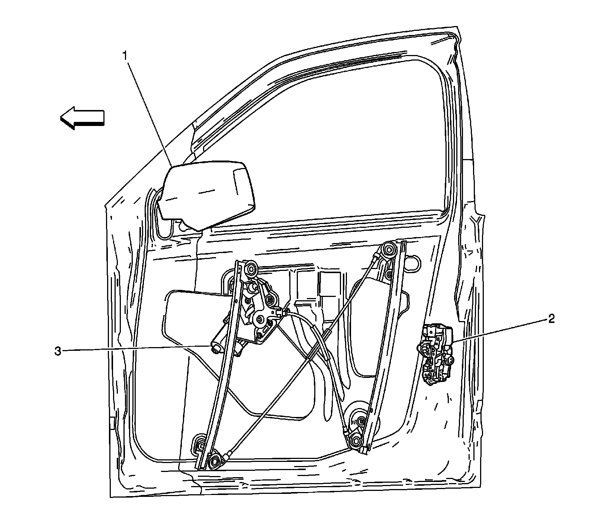
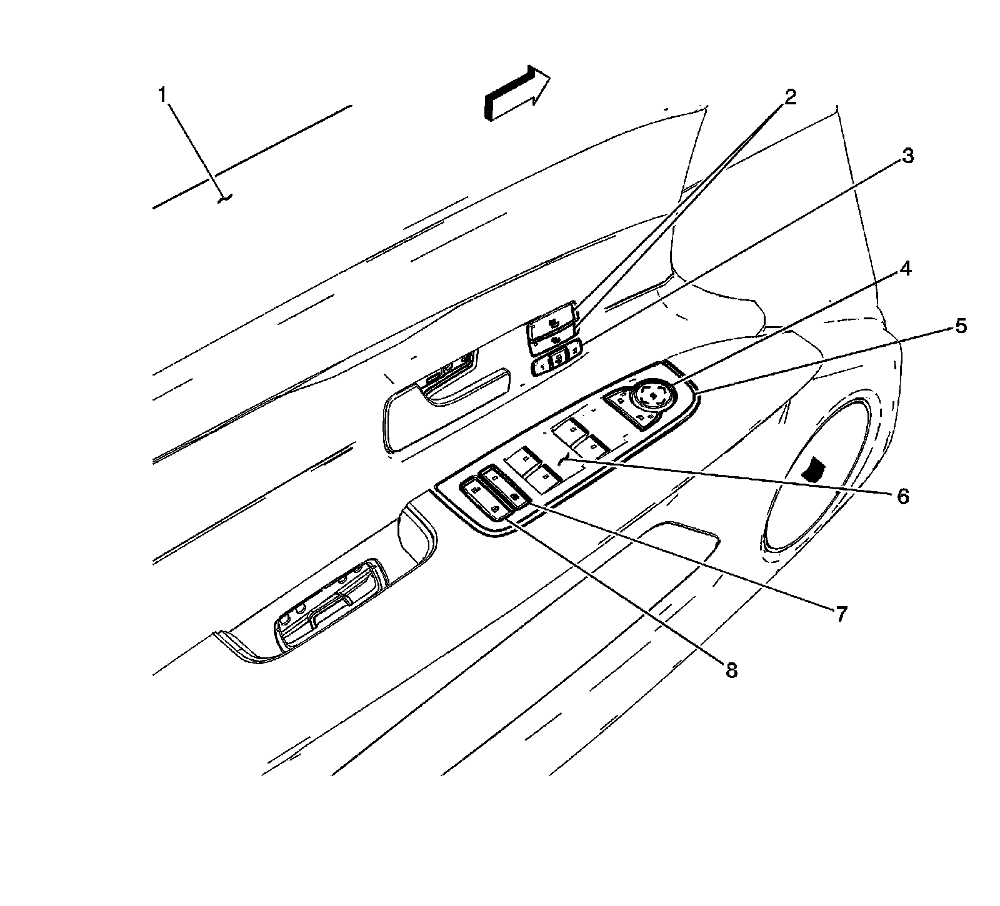

J500 - J599
Door Component Views
Driver Door Components 1 of 3 (LHD)

1 - Outside Rearview Mirror (OSRVM) - Driver
2 - Door Latch Assembly - Driver
3 - Window Motor - Driver
Driver Door Components 2 of 3 (LHD)

1 - Driver Door
2 - Heated Seat Switches (KA1)
3 - Memory Seat Switch (A45)
4 - Outside Rearview Mirror (OSRVM) Switch
5 - Driver Door Module (DDM)
6 - Window Switches
7 - Window Lockout Switch
8 - Door Lock/Unlock Switch
Driver Door Components 3 of 3 (LHD)

1 - Driver Door Module (DDM)
2 - Heated Seat Switch - Driver (KA1)
3 - Memory Seat Switch (A45)
4 - Window Motor - Driver
5 - J501
6 - X500
7 - Speaker - Left Front Door
8 - X501
9 - X502
10 - Courtesy Lamp - Left Front Door
11 - Outside Rearview Mirror (OSRVM) - Driver Side X1
12 - Outside Rearview Mirror (OSRVM) - Driver Side X2
13 - Door Latch Assembly - Driver
Harness Routing Views (RHD)
Forward Lamp Harness

1 - J104 (TR7)
2 - X112
3 - X114 (T90)
4 - X109
5 - J105 (K14)
6 - Fuse Block - Underhood Bracket
7 - X116
8 - G104
9 - G110 (LH2 - Gas, 8 Cylinder, 4.6L, SFI, V8, DOHC, HO)
10 - X113 (LH2 - Gas, 8 Cylinder, 4.6L, SFI, V8, DOHC, HO)
11 - X110
12 - X115 (T90)
13 - X111